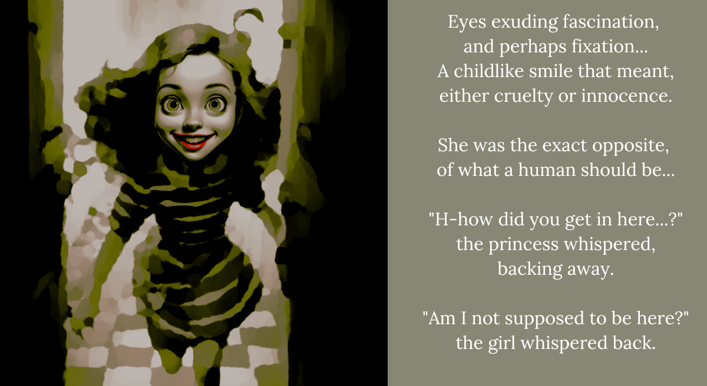

CC1. She was creepy
“Hey, hey, have you read that story?”
“W-what story are you talking about?”
“You know, it’s called The Princess’s Tale, you know,
and it’s about a princess like you,
who meets a girl like me!
And then the girl comes up to the princess and asks,
‘Hey, hey, have you read that story?’
Then the princess asks, ‘W-what story are you talking about?’
And then…”
She trembled behind the shelf,
holding her mouth, so she wouldn’t scream.
“She’s gonna kill me… goodness, she’s gonna kill me!”
‘Is she going to kill my stepmother, too?’ the princess wondered.
“I’m not sure how bad I’d feel…”
“I FOUND YOU!”
“EEEEEEK!”
“Very clever hiding behind the shelf, princess!
You know if you push the shelf to the side,
you can find a whole new library, and a whole new set of shelves!
Then you can hide behind those!
Shelves within shelves, interlinked! Say it!”
“Shelves within shelves, interlinked,” the princess gasped.
“Interlinked!
“I-i-interw-w-winked!” the princess bit her tongue.
“Uh oh princess…” the girl said, approaching.
Welp. Shiori has been totally silent for about twenty minutes now. Just quietly sitting in a corner, petting Yorick, and very occasionally throwing a glare my way. Okay, okay. I get it. This one’s on me.
“I didn’t write it, okay? That’s not you. You’re not like that.”
She just turns away. Looks like it’s gonna be a sulkfest for a lot, lot longer. I double facepalm in frustration. Ugh. I really need to stop doing this. But I don’t have Yorick to pet anymore… Okay! Enough of that! We need to power through. Let’s pick a new route.
ENDING 2 REACHED: “Isn’t reading just so fun?”
It looks like Shiori is sulking. But fret not! That doesn’t mean you can’t choose which story you want to jump right into.
RETURN